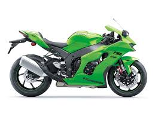
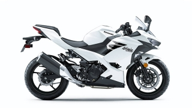
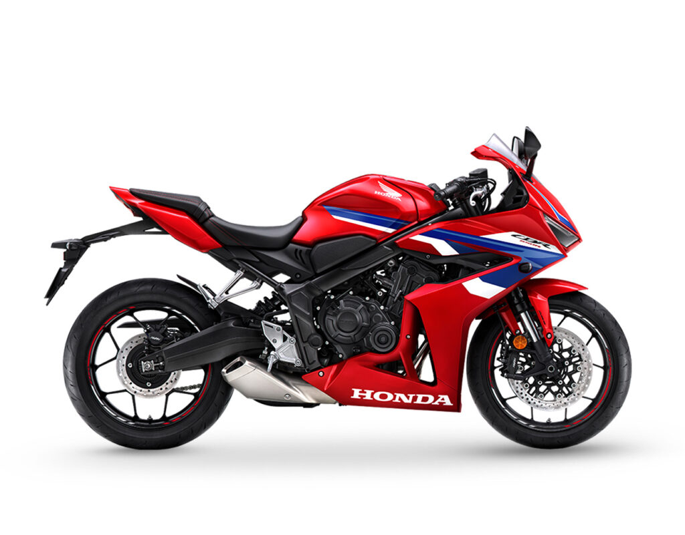
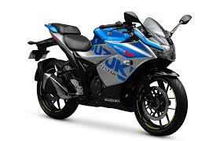
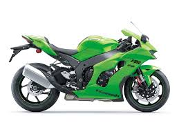
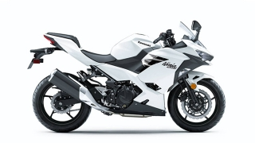
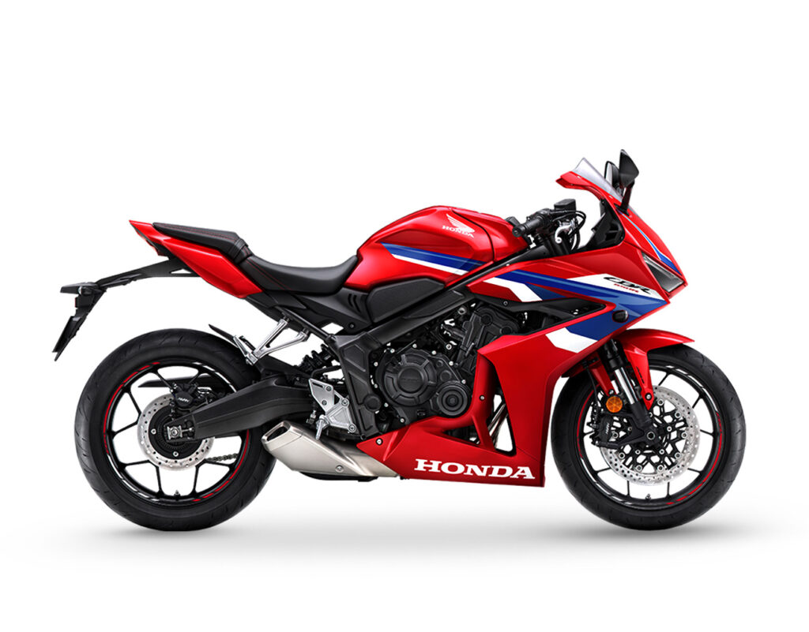
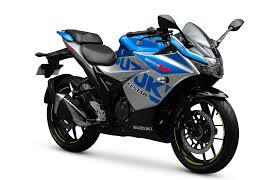
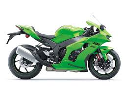
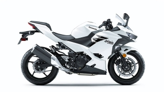
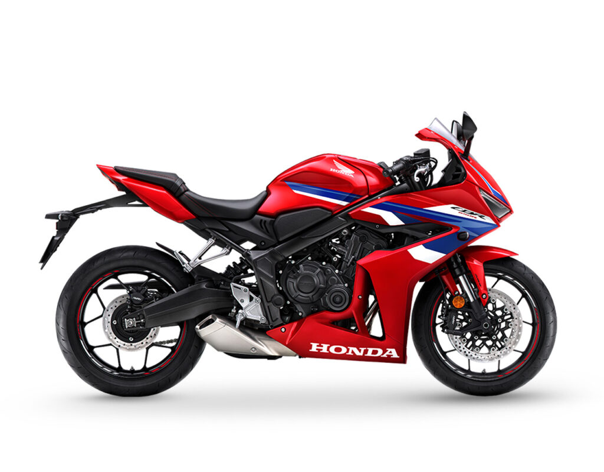
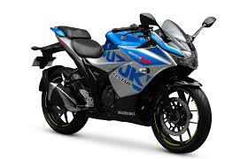
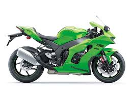
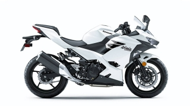
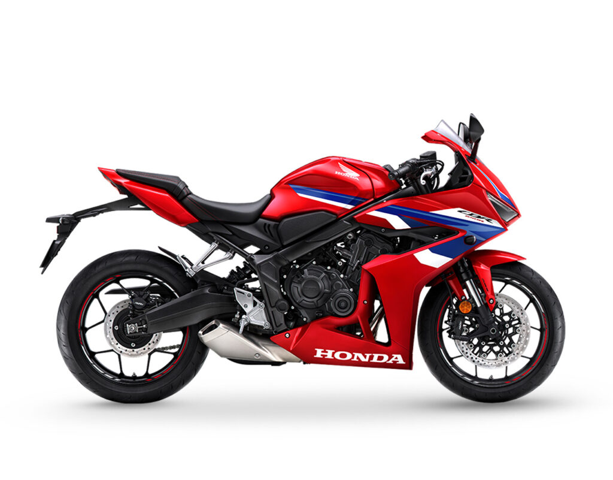
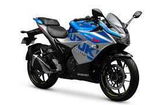
If you’re in the market for a motorcycle, choosing between a big bike and a small bike has probably come to mind. Despite being a relatively simple problem of choosing one or the other, many different factors may affect which bike may be best suited for you. For the sake of this article, and based on local motorcycling norms, motorcycles with a 400cc engine displacement or higher will be referred to as big bikes, and all else below 400cc will be referred to as a small bike. Choosing a bike that will make you happiest will depend mostly on how well the bike suits your capabilities and preferences as a rider. How much physical energy are you willing to exert to ride your bike every day? Do you have an appetite for extreme power, or will usable power do? Where will you be riding your bike? How much of your money are you willing to set aside for regular maintenance and the upfront fee of purchasing a motorcycle? All of these questions – and more are very important to ask when deciding which motorcycle to buy since there are many pros and cons to consider when purchasing a bike. So if you’ve found yourself in a dilemma on whether to buy a big bike or a small bike, here are a few things you may want to consider as you make your purchase.